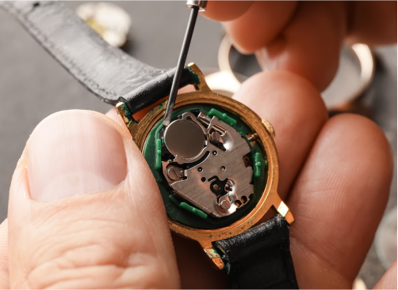
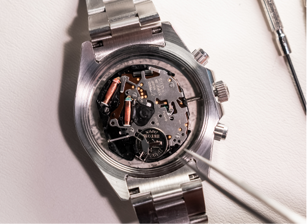
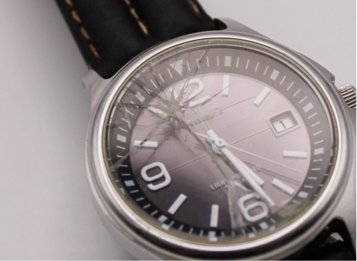
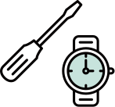
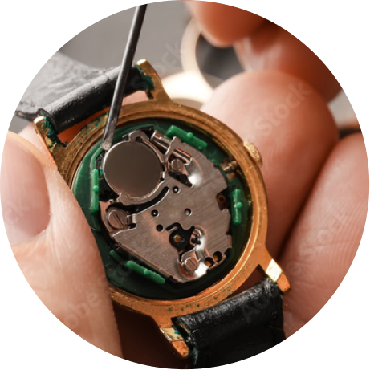
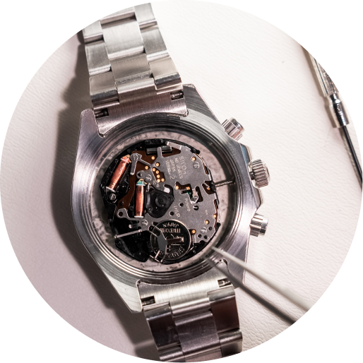

サービス内容
時計修理
止まった時間に
もう一度命を吹き込む
当社はもともと時計修理を専門としていた会社です。
その長年のノウハウやさまざまなブランドウォッチとの取引があるため、専用工場での電池交換やオーバーホールを承ります。長く愛用されてきた腕時計を再び美しく蘇らせますので、見積もりからお気軽にご相談ください。
REPAIRED
修理可能なもの
-
-
バンド交換・サイズ調整
-

オーバーホール
（分解掃除）
-
防水検査
-

ガラス交換
-
外装仕上げ
（磨き出し）
PRICE
料金
|
国産腕時計 電池交換 *1 |
1,100円税込〜 （当社会員様価格500円税込） |
|---|---|
|
ブランド 舶来時計 *2 |
2,200円税込〜 （当社会員様価格1,700円税込） |
| ベルト調整 | 1,100円税込〜 （当社会員様価格500円税込） |
| オーバーホール*3 | 2,200円税込〜 （当社会員様価格1,700円税込） |
- *1: SEIKO、CITIZEN 等
- *2: お預かりになる場合がございます
- *3: お見積り承ります
FLOW
修理のステップ
-
STEP 1
ご相談・お問い合わせ
まずはお気軽に店舗またはお問い合わせフォームからご連絡ください。「電池が切れた」「動かなくなった」「ガラスが割れた」など、簡単にお伝えいただければ大丈夫です。
-
STEP 2
お品物のお預かり
店舗にお持ち込みいただくか、配送でも承ります。
大切なお時計をお預かりする際には、受付票を発行し丁寧に管理いたします。 -
STEP 3
状態確認・お見積り
専門スタッフが分解・点検を行い、修理方法や必要な部品、費用を明確にご案内します。料金や修理期間にご納得いただいてから、修理を開始いたしますので安心です。
-
STEP 4

熟練職人による修理
熟練の時計職人が分解調整・部品交換・洗浄・注油などを行い、時計本来の性能を取り戻します。精密機器である腕時計の0.01ミリ単位の調整も、細心の注意を払って仕上げます。
-
STEP 5
お渡し
修理が完了した時計をお客様にお渡しします。仕上がりをご確認いただき、今後も安心してお使いいただけるよう、日常のメンテナンス方法もご案内しております。


VOICE
利用していただいた
お客様からの声
-

40代女性
電池交換
「買い物ついでに立ち寄れて、すぐに直って助かりました！」
子どもを迎えに行く前に時計が止まっていて焦っていましたが、親切に対応してくださり安心できました。説明も分かりやすく、今後の扱い方も教えてもらえて良かったです。 -
60代男性
バンド交換
「長年愛用してきた時計が、また新しく見えました」
革バンドが劣化していたので交換を依頼。店頭で雰囲気に合うものを提案していただき、装着感も良く、仕事でも休日でも使える一本になりました。 -

30男性
オーバーホール
「止まっていた時計がまた動き出して感動しました」
長く使っていたため精度が落ちていましたが、分解・洗浄から調整まで丁寧に対応いただき、見た目も動きも新品のように。思い入れのある時計を今後も大切に使えます。